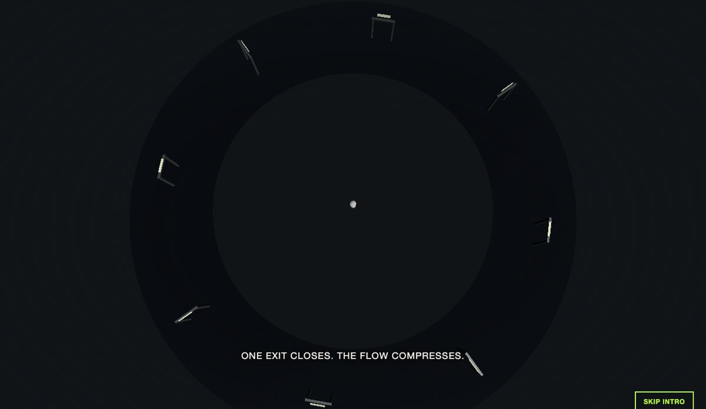
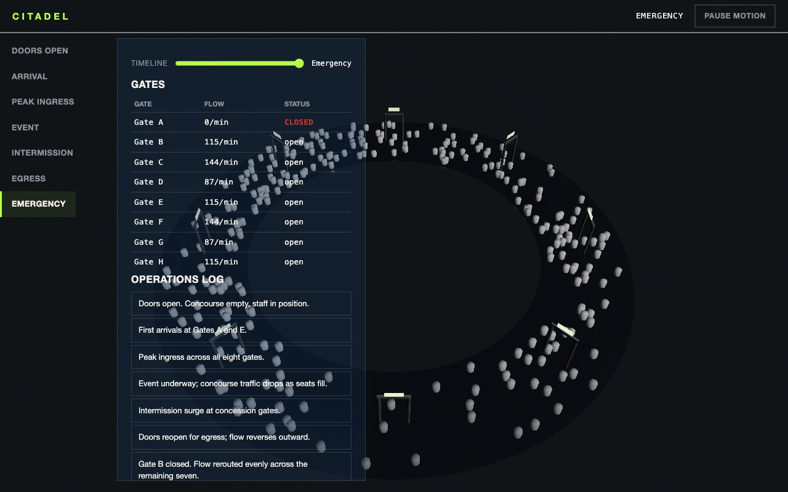
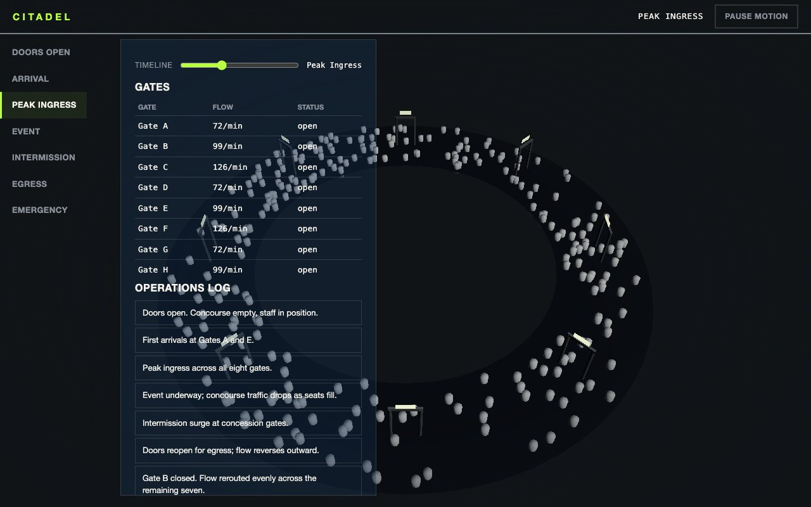

Blender · three.js · motion design · 2026-10
What Happens to 1,000 People When One Exit Closes?
A stadium crowd-flow and evacuation intelligence platform: one 320-glyph instanced crowd reads as a flow-field gradient from a distance and individual people up close, and closing a single gate visibly redistributes its flow across the other seven in real time.

Built from blueprint 06 of a written build book (Advanced Engineering Build Book, Volume VIII) as one vertical slice, using the five-tool-design-pipeline skill: an Awesome Design file for type/spacing scale (the palette's own lime/red carries the real signage semantics), the Taste/Impeccable checklist, Playwright including a crowd-pixel-sample check, Three.js as the product. Everything is synthetic: the 8 gates, their flow and the operations log come from a deterministic generator; the crowd is a closed-form density field, not an agent-based simulation. Not built: a real navmesh/pathfinding solver, deck.gl/PostGIS, auth.
01 — The problem
The book's rule for this blueprint is that the crowd has to read as a flow field at macro scale and as individuals up close, from the same representation, and an exit closure has to visibly reroute flow, not just flag a status.
02 — What I built
One repository with the whole pipeline.
- A scripted asset:
model/build.pybuilds a gate/turnstile prop and a human glyph, exports GLBs, renders a poster. - A domain model: a radial density field (gaussian bumps around each gate, weighted by live flow), and a reroute function that splits a closed gate's full flow evenly across the rest, all pure and unit-tested.
- A browser runtime where 320 glyph instances share one draw call; each instance's scale and color come from the same
densityAtfunction the gate table reads, so from a distance it reads as a gradient and up close as individual people appearing and thinning. - An intro that grows the crowd from one person to a packed concourse, rises to the operational view, closes a gate, and hands off through a light mask.
- Fallbacks: poster for no WebGL, static keyframes for reduced motion.
03 — How it was built
- 01
One field, two scales
There is no LOD swap between a 'macro flow-field view' and a 'local individuals view.' The same 320 instances just scale from near-zero to full size based on local density, which is what makes a distant view read as a gradient and a close view read as people, without two separate rendering paths to keep in sync.
- 02
A closure that actually redistributes, not just flags
When gate-1 closes, its full capacity is split evenly across the seven open gates in the same density function the 3D crowd reads, so the visual compression near the closed gate and the gate table's flow numbers come from one calculation, not two that could drift apart.
const redistributed = closedGate ? (closedGate.capacityPerMin * level) / open.length : 0; return gate.capacityPerMin * level + redistributed; - 03
Applying the volume's running lessons
This blueprint's instanced crowd mesh called
setColorAtin its matrix-setup effect from the first write (the fix from blueprint 03'sinstanceColordeadlock), and its keyboard test waits for the HUD before focusing (the fix from blueprint 05's hydration-timing flake). Both passed on the first run.
04 — Results
Emergency stage, Gate A closed:

Peak ingress:

Checks. 10 unit and API tests, 19 Playwright tests including the crowd pixel-sample check, clean typecheck.
Performance, SwiftShader (no GPU claim). 34 draw calls, 12,416 triangles; 565 KB gzipped JS. Median 16.7 ms per frame.
05 — What I'd do next
- Measure on a physical GPU and a mid-range phone.
- Replace the closed-form density field with a real agent-based or navmesh-routed simulation.
- Instance the gate props too (currently 8 separate primitives) once a per-instance material-swap technique is in place.